36 13’ 52.7”N 137 58’ 36”E

36 24’ 11.3”N 138 14’ 49.3”E

36 26’ 25.5”N 138 18’ 27.2”E

36 17’ 1.4”N 138 13’ 50.3”E

36 19’ 39.3”N 138 25’ 23.9”E

36 19’ 40”N 138 25’ 32.2”E

36 19’ 39.7”N 138 25’ 16.1”E
Aguri no Yu Komoro
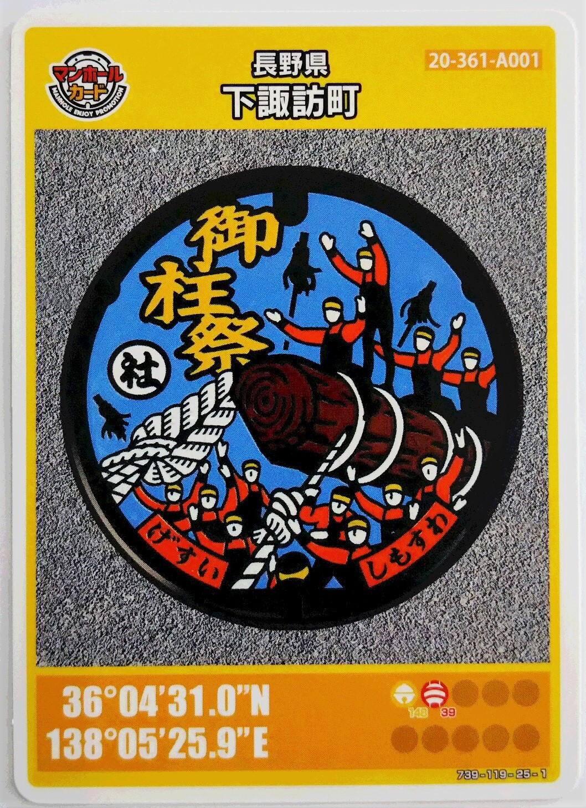
Shimosuwa Information Centre
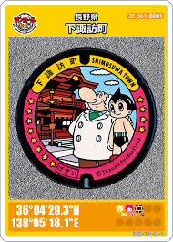
Shimosuwa Konjakukan Oideya (ศาลเจ้าสุวะ ไทฉะ ชิโมฉะ อากิมิยะ)
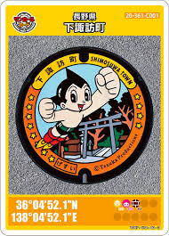
Onbashira-kan Yoisa (ศาลเจ้าสุวะ ไทฉะ ชิโมฉะ ฮารุมิยะ)
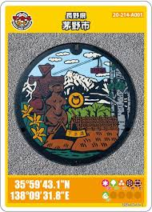
Chino Tourist Information Center
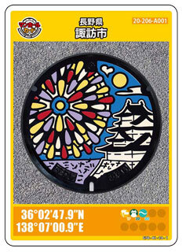
Suwa Tourist Information Center
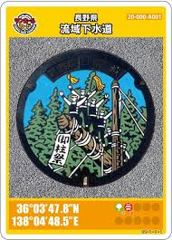
Toyoda Terminal Treatment Plant
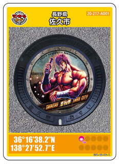
36 16’ 38.2”N 138 27’ 52.7”E
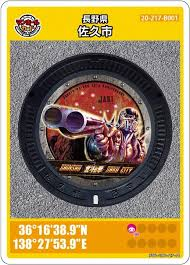
36 16’ 38.9”N 138 27’ 53.9”E
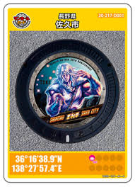
36°16'38.9"N 138°27'57.4"E
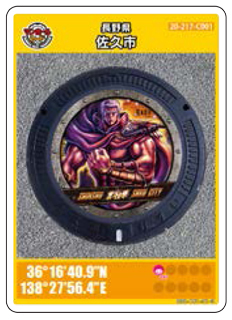
36 16’ 40.9”N 138 27’ 56.4”E
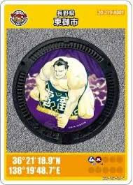
Roadside Station Raiden Kurumi no Sato
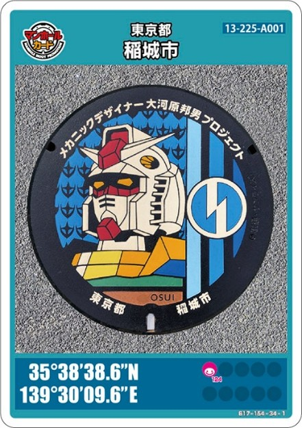
35 38’ 38.6”N 139 30’ 9.6”E
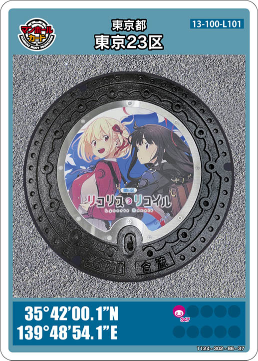
35 42’ 0.1”N 139 48’ 54.1”E
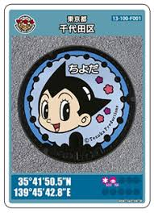
Chiyoda City Tourism Association
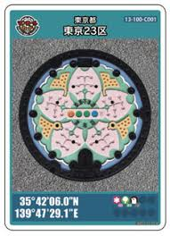
Tokyo Tourist Information Center Keisei Ueno
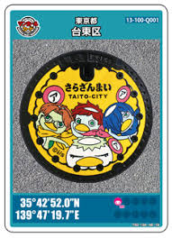
Taito City Life-long Learning Center
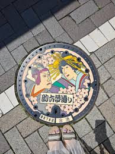
sumida park
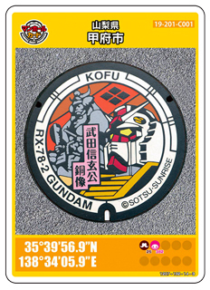
甲府市歴史文化交流施設 こうふ亀屋座 (south exit of Kofu Station)
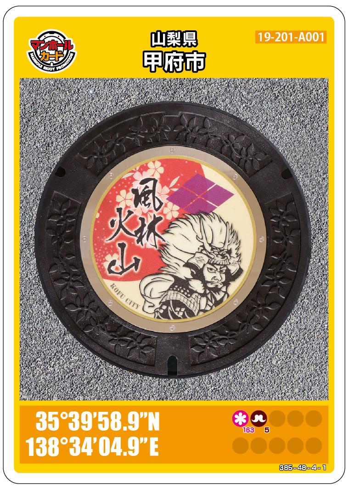
Shingen Museum
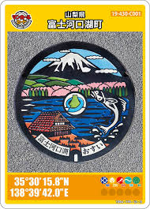
Saiko Nature Center
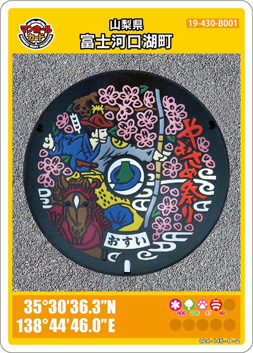